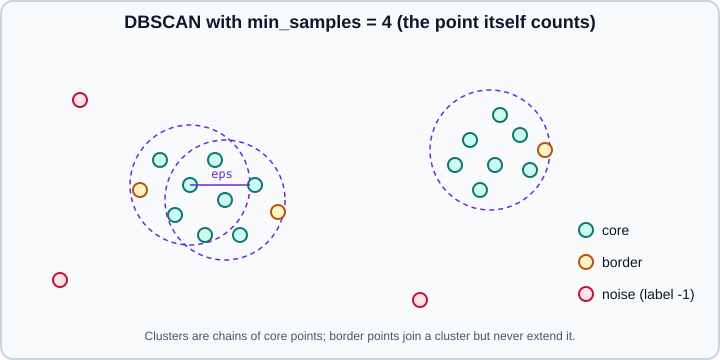

Clustering
|
This content was generated with the assistance of AI and should be verified against the official documentation before being relied on in production. |
Clustering groups unlabelled samples so that samples in one group are more similar to each other than to the rest. There is no target to predict, so there is also no single right answer: the result depends on the algorithm, its parameters, the scale of the features and the distance used. This page targets scikit-learn 1.9, with NumPy 2.5 and pandas 3.1, and it was checked in October 2026. Examples target Python 3.13 or 3.14. Every example was run on Python 3.13.18, NumPy 2.5.4, pandas 3.1.0 and scikit-learn 1.9.1; the printed output is real and varies slightly with other versions, platforms and seeds. The package is installed as scikit-learn and imported as sklearn. For the wider unsupervised toolkit see PCA, TruncatedSVD & NMF, Gaussian Mixture Models (soft clustering with a probabilistic model), Manifold Learning and Outlier & Novelty Detection. The concept of unsupervised learning is introduced in Machine Learning Fundamentals.
The clusterer API
Every algorithm in sklearn.cluster comes in two forms: an estimator class and, for most of them, a function that returns the labels directly (for example k_means, dbscan and ward_tree). A fitted class stores the training labels in labels_; samples that a density algorithm considers noise get the label -1. All of them are cluster mixins and provide fit_predict(X).
Algorithms split into two families that matter in practice:
-
Inductive clusterers learn a model that can label new data:
KMeans,MiniBatchKMeans,BisectingKMeans,AffinityPropagation,MeanShift,BirchandGaussianMixtureprovidepredict. -
Transductive clusterers only label the data they were fitted on:
DBSCAN,HDBSCAN,OPTICS,AgglomerativeClusteringandSpectralClusteringhave nopredict. To label new points you must refit, or train a classifier on the cluster labels afterwards.
Most estimators take a feature matrix of shape (n_samples, n_features). AffinityPropagation, SpectralClustering and DBSCAN can also take a precomputed similarity or distance matrix of shape (n_samples, n_samples) (for DBSCAN, HDBSCAN, OPTICS and AgglomerativeClustering through metric="precomputed"); the helpers are in sklearn.metrics.pairwise.
Choosing an algorithm
The user guide compares the methods on the parameters they need, how they scale and the geometry they assume:
| Method | Main parameters | Scalability | Typical use |
|---|---|---|---|
|
Number of clusters |
Very large |
General purpose, even cluster sizes, flat geometry |
|
Number of clusters, batch size |
Very large data |
The same, trading a little quality for speed |
|
Number of clusters |
Very large |
Hierarchical divisive k-means; no empty clusters |
|
|
Very large |
Non-flat geometry, uneven sizes, outlier removal |
|
|
Large |
Like DBSCAN with varying density and no |
|
|
Very large |
Variable density; produces a reachability plot |
|
Number of clusters or distance threshold, linkage, metric |
Large |
Hierarchies, connectivity constraints, any pairwise distance |
|
Number of clusters |
Medium |
Few clusters, non-flat geometry |
|
|
Not scalable with |
Many clusters of uneven size |
|
|
Not scalable with |
Many clusters, finds the number itself |
|
|
Large |
Large data sets and data reduction |
|
Many |
Not scalable |
Flat geometry, density estimation |
Clustering methods are sensitive to feature scale, because they are built on distances. Scale numeric features first (see Scaling & Transforming Features), encode categoricals with care, and consider reducing very wide data with PCA, which both speeds things up and weakens the concentration of distances in high dimensions.
K-means
KMeans splits the samples into n_clusters groups of roughly equal variance by minimising the inertia, the sum of squared distances from each sample to its closest centroid:
\[\sum_{i=0}^{ N-1 }\min_{\mu_j \in C}\lVert x_i - \mu_j \rVert^2\]
The algorithm (Lloyd’s) alternates two steps until the centroids stop moving: assign every sample to the nearest centroid, then move every centroid to the mean of its samples. It always converges, but possibly to a local minimum, so the starting centroids matter. init="k-means++" (the default) picks well-spread seeds, and n_init controls how many restarts are made, keeping the best by inertia. Since scikit-learn 1.4 the default is n_init="auto": one run with k-means++ initialisation, and 10 runs for init="random" (older versions ran 10 by default and warned when it was not set explicitly).
import numpy as np
from sklearn.cluster import BisectingKMeans, KMeans, MiniBatchKMeans
from sklearn.datasets import make_blobs
from sklearn.metrics import adjusted_rand_score, silhouette_score
X, y_true = make_blobs(n_samples=600, centers=4, cluster_std=[1.0, 1.5, 0.5, 1.0], random_state=7)
km = KMeans(n_clusters=4, random_state=0).fit(X)
print("inertia:", round(km.inertia_, 1), "iterations:", km.n_iter_, "sizes:", np.bincount(km.labels_))
print("ARI vs the generating labels:", round(adjusted_rand_score(y_true, km.labels_), 3))
print("k inertia silhouette")
for k in range(2, 8):
m = KMeans(n_clusters=k, random_state=0).fit(X)
print(f"{k} {m.inertia_:7.0f} {silhouette_score(X, m.labels_):.3f}")
print("predict:", km.predict([[0, 0], [5, 5]]), "| transform shape:", km.transform(X[:1]).round(1))
mb = MiniBatchKMeans(n_clusters=4, batch_size=256, random_state=0, n_init="auto").fit(X)
print("MiniBatchKMeans: ARI", round(adjusted_rand_score(y_true, mb.labels_), 3), "inertia", round(mb.inertia_, 1))
bk = BisectingKMeans(n_clusters=4, random_state=0).fit(X)
print("BisectingKMeans: ARI", round(adjusted_rand_score(y_true, bk.labels_), 3))inertia: 1295.9 iterations: 2 sizes: [150 151 150 149]
ARI vs the generating labels: 0.996
k inertia silhouette
2 18576 0.580
3 5431 0.761
4 1296 0.798
5 1078 0.705
6 969 0.609
7 812 0.618
predict: [3 0] | transform shape: [[13.6 16.9 0.4 13.2]]
MiniBatchKMeans: ARI 0.996 inertia 1296.9
BisectingKMeans: ARI 0.978Source: scikit-learn user guide, K-means
Reading the table: the inertia always decreases as k grows, so you look for an elbow where the improvement flattens (here between 3 and 5 clusters, with a sharp drop up to 4), and the silhouette score peaks at 4, the true number of clusters. transform returns the distances from each sample to every centroid, which makes KMeans usable as a feature extractor; predict assigns new samples to the nearest centroid.
The variants:
-
MiniBatchKMeansupdates the centroids from random mini-batches, with a streaming average per centroid. It optimises the same objective, is much faster on large data, and gives results that are generally only slightly worse. It supportspartial_fitfor out-of-core data. -
BisectingKMeans(added in 1.1) starts with one cluster and repeatedly splits one cluster in two with k-means, choosing the cluster with the most points (bisecting_strategy="largest_cluster", the default) or the largest inertia. It is more efficient thanKMeanswhen the number of clusters is large, cannot produce empty clusters, tends to give clusters of similar size and yields a visible hierarchy of splits. It gives inertia comparable to k-means++ at lower cost. -
sample_weightinfitweights samples when computing centroids and inertia; a weight of 2 is equivalent to duplicating the sample. -
algorithmselects"lloyd"(default) or"elkan"; the former names"full"and"auto"were renamed or deprecated in 1.1.
The danger of local minima is real, and restarts remove it. The next snippet fits eight models with a single random initialisation and eight with the default k-means++ and ten restarts, and compares the final inertia:
single = [KMeans(4, init="random", n_init=1, random_state=s).fit(X).inertia_ for s in range(8)]
best_of_10 = [KMeans(4, n_init=10, random_state=s).fit(X).inertia_ for s in range(8)]
print("one random start :", np.round(sorted(single)))
print("ten k-means++ starts :", np.round(sorted(best_of_10)))one random start : [ 1296. 1296. 1296. 1296. 5335. 5396. 5396. 14367.]
ten k-means++ starts : [1296. 1296. 1296. 1296. 1296. 1296. 1296. 1296.]Source: sklearn.cluster.KMeans
Half of the single random starts end in bad local minima, with inertia up to eleven times the optimum. K-means assumes convex, similarly sized, isotropic clusters; it does badly on elongated or interlocked shapes (see the moons comparison below) and treats every outlier as a member of some cluster. Inertia is also not normalised and grows with dimension, which is another reason to reduce dimensionality first. KMeans uses OpenMP threads, controlled as described in Performance & Parallelism.
DBSCAN
DBSCAN defines clusters as dense regions separated by sparse ones. It has two parameters. eps is the neighbourhood radius and min_samples is the number of samples (counting the point itself) required inside that radius for a point to be a core point. A cluster is a set of core points that can be reached from each other through chains of neighbouring core points, plus the border points on its edge. Points that are not within eps of any core point are noise and get the label -1.

Unlike k-means, DBSCAN needs no number of clusters, finds arbitrarily shaped clusters and flags outliers. It is deterministic apart from the assignment of border points that are reachable from more than one cluster. Its weaknesses are the single global eps, which cannot serve clusters of different densities, and the dependence of eps on feature scale.
Choosing eps is the main task. A common heuristic is the k-distance plot: compute for every sample the distance to its min_samples-th neighbour, sort the values and look for the knee where the curve turns sharply up; points beyond it are noise. The snippet below uses two interleaving half-moons with 25 uniform outliers added.
import numpy as np
from sklearn.cluster import DBSCAN, HDBSCAN
from sklearn.datasets import make_moons
from sklearn.metrics import adjusted_rand_score
from sklearn.neighbors import NearestNeighbors
X, y = make_moons(n_samples=500, noise=0.07, random_state=0)
rng = np.random.default_rng(0)
Xn = np.vstack([X, rng.uniform(-1.5, 2.5, size=(25, 2))]) # add 25 uniform outliers
yn = np.r_[y, -np.ones(25, dtype=int)]
# k-distance: distance to the min_samples-th neighbour (the point itself counts as the first)
distances, _ = NearestNeighbors(n_neighbors=5).fit(Xn).kneighbors(Xn)
print("5th-neighbour distance percentiles (50, 90, 95, 99):", np.percentile(distances[:, -1], [50, 90, 95, 99]).round(3))
print("eps clusters noise")
for eps in (0.05, 0.1, 0.2, 0.4, 0.8):
labels = DBSCAN(eps=eps, min_samples=5).fit_predict(Xn)
print(f"{eps:<4} {len(set(labels)) - (1 if -1 in labels else 0):8d} {(labels == -1).sum():6d}")
db = DBSCAN(eps=0.2, min_samples=5).fit(Xn)
print("core samples:", len(db.core_sample_indices_), "of", len(Xn))5th-neighbour distance percentiles (50, 90, 95, 99): [0.064 0.112 0.149 1.034]
eps clusters noise
0.05 30 278
0.1 3 40
0.2 2 17
0.4 1 14
0.8 1 7
core samples: 505 of 525Source: scikit-learn user guide, DBSCAN
The percentile row shows the knee: 95 per cent of the points have a fifth neighbour within 0.15 while the top one per cent jump to about 1.0. The sweep over eps shows how sensitive the result is: too small shatters the data into 30 groups and calls over half of it noise, too large merges the two moons into one cluster. Values around 0.2 recover both moons and keep 17 noise points. The fitted attributes include core_sample_indices_ and components_ (the core points). DBSCAN uses a KD-tree or ball tree to find neighbours, which avoids the full distance matrix. When trees cannot be used (for example with sparse input) it builds an n x n similarity matrix, which is not memory efficient. The user guide lists ways around it: run OPTICS and extract a DBSCAN-like result with cluster_optics_dbscan, precompute a sparse radius-neighbourhood graph and pass it with metric="precomputed", or compress the data (remove duplicates, or summarise it with BIRCH) and pass sample_weight.
Scale matters: eps is in the unit of the data, so one unscaled feature dominates the distance. The last lines of the HDBSCAN section show a feature with a standard deviation of 1000 next to one with 1 making eps=0.5 find a single cluster.
HDBSCAN
HDBSCAN (added in 1.3) extends DBSCAN by running it for all possible values of eps and keeping the clusters that persist longest, which lets it find clusters of different densities. It builds a minimum spanning tree over the mutual reachability distance (a distance that inflates distances in sparse regions using each point’s core distance), condenses the resulting hierarchy and selects stable clusters. Its main parameters are:
-
min_cluster_size(default 5): the smallest group considered a cluster rather than noise. -
min_samples(defaultNone, meaningmin_cluster_size): how conservative the density estimate is; larger values label more points as noise. -
cluster_selection_method:"eom"(excess of mass, default) or"leaf"(smaller, finer clusters),cluster_selection_epsilonto merge clusters closer than a distance,allow_single_cluster,max_cluster_size. -
store_centers("centroid","medoid"or"both") to compute cluster centres. -
metric,algorithm,n_jobsas for the other neighbour-based methods.
The fitted labels_ use -1 for noise, and probabilities_ gives the strength with which each sample belongs to its cluster. There is no predict, so HDBSCAN is transductive in scikit-learn.
h = HDBSCAN(min_cluster_size=15, store_centers="medoid", copy=True).fit(Xn)
print("HDBSCAN clusters:", h.labels_.max() + 1, "noise:", (h.labels_ == -1).sum(), "ARI", round(adjusted_rand_score(yn, h.labels_), 3))
print("probabilities_ of first 3:", h.probabilities_[:3].round(2), "medoids:", h.medoids_.round(2).tolist())
print("has predict:", hasattr(h, "predict"))HDBSCAN clusters: 2 noise: 23 ARI 0.968
probabilities_ of first 3: [1. 0.56 1. ] medoids: [[0.06, 0.87], [0.93, -0.39]]
has predict: FalseSource: scikit-learn user guide, HDBSCAN
The copy parameter appears explicitly because its default is changing: in 1.9 it defaults to False and a FutureWarning asks you to set it, since the default will become True in 1.10 (upcoming). It only matters for metric="precomputed" with the brute-force algorithm, where in-place changes could otherwise overwrite the distance matrix you passed in.
The advantage over DBSCAN shows when densities differ. The data below has a tight cluster and a loose one; no single eps is right for both:
from sklearn.datasets import make_blobs
X, y = make_blobs(n_samples=[300, 300], centers=[[0, 0], [6, 0]], cluster_std=[0.3, 1.2], random_state=0)
print("eps clusters noise ARI")
for eps in (0.2, 0.3, 0.6, 1.0):
labels = DBSCAN(eps=eps, min_samples=8).fit_predict(X)
print(f"{eps:<5} {len(set(labels)) - (1 if -1 in labels else 0):8d} {(labels == -1).sum():6d} {adjusted_rand_score(y, labels):.3f}")
labels = HDBSCAN(min_cluster_size=30, copy=True).fit_predict(X)
print("HDBSCAN", len(set(labels)) - (1 if -1 in labels else 0), (labels == -1).sum(), round(adjusted_rand_score(y, labels), 3))
rng = np.random.default_rng(0)
unscaled = np.c_[rng.normal(0, 1, 400), rng.normal(0, 1000, 400)]
print("unscaled data, eps=0.5, clusters found:", len(set(DBSCAN(eps=0.5).fit_predict(unscaled))))eps clusters noise ARI
0.2 6 264 0.783
0.3 5 165 0.704
0.6 2 21 0.935
1.0 2 4 0.987
HDBSCAN 2 2 0.993
unscaled data, eps=0.5, clusters found: 1Source: scikit-learn user guide, HDBSCAN
Small eps values split the loose cluster into fragments and label most of it noise; larger values start to do better but must be found by trial, while HDBSCAN gets it right with one intuitive parameter.
OPTICS
OPTICS orders the points so that spatially close ones are neighbours in the ordering and records for each one a reachability distance. Plotting the reachability distances in that order gives a reachability plot, where valleys are clusters; deeper valleys are denser clusters. Clusters can be extracted automatically with the xi method (a steepness threshold, the default cluster_method="xi") or by cutting the plot at a fixed eps (as DBSCAN would), with cluster_optics_dbscan. It handles varying density and keeps memory use linear in the number of samples. For large data sets, HDBSCAN gives similar (not identical) results with better runtime complexity but worse memory scaling; the user guide recommends OPTICS, with a tuned max_eps, for data that exhausts memory under HDBSCAN.
from sklearn.cluster import OPTICS, cluster_optics_dbscan
X, y = make_blobs(n_samples=[300, 300, 100], centers=[[0, 0], [6, 0], [3, 6]], cluster_std=[0.3, 1.0, 0.5], random_state=0)
op = OPTICS(min_samples=15, xi=0.05, min_cluster_size=0.05).fit(X)
labels = op.labels_
print("xi method:", len(set(labels)) - (1 if -1 in labels else 0), "clusters, noise", (labels == -1).sum(),
"ARI", round(adjusted_rand_score(y, labels), 3))
print("reachability in cluster order:", op.reachability_[op.ordering_][:5].round(2))
for eps in (0.3, 0.6, 1.0):
cut = cluster_optics_dbscan(reachability=op.reachability_, core_distances=op.core_distances_,
ordering=op.ordering_, eps=eps)
print("cut at eps", eps, "->", len(set(cut)) - (1 if -1 in cut else 0), "clusters,", (cut == -1).sum(), "noise")xi method: 3 clusters, noise 0 ARI 1.0
reachability in cluster order: [ inf 0.3 0.26 0.26 0.26]
cut at eps 0.3 -> 4 clusters, 278 noise
cut at eps 0.6 -> 3 clusters, 20 noise
cut at eps 1.0 -> 3 clusters, 4 noiseSource: scikit-learn user guide, OPTICS
The first point in the ordering has infinite reachability by definition. Like DBSCAN, OPTICS has no predict. The extraction method matters: with xi the quality depends on min_samples and xi, and on interlocked shapes like the moons it can fragment the data, so always plot the reachability graph before trusting the automatic result.
Agglomerative clustering
AgglomerativeClustering is a bottom-up hierarchy: every sample starts as its own cluster and, at each step, the two closest clusters are merged until n_clusters remain or the merge distance exceeds distance_threshold. How close two clusters are is decided by the linkage:
linkage |
Criterion |
|---|---|
|
Merge the pair that gives the smallest increase in within-cluster variance. Euclidean distance only; produces compact clusters of similar size. |
|
Maximum distance between the samples of two clusters; favours compact clusters and is sensitive to outliers. |
|
Average distance between all pairs; a compromise, works with any metric. |
|
Minimum distance between the samples of two clusters; follows chains and finds elongated clusters, but "chains" through noise. |
For linkages other than Ward, the metric can be any pairwise distance ("euclidean", "manhattan", "cosine", or "precomputed"). The older name of this parameter was affinity; metric replaced it in 1.2 and affinity was removed in 1.4, so passing it raises a TypeError, as the run below confirms. Passing n_clusters=None with a distance_threshold lets the data decide the number of clusters; compute_distances=True keeps the merge distances in distances_ so a dendrogram can be drawn, for example through scipy.cluster.hierarchy.dendrogram.
import numpy as np
from scipy.cluster.hierarchy import linkage
from sklearn.cluster import AgglomerativeClustering
from sklearn.datasets import make_blobs, make_moons
from sklearn.metrics import adjusted_rand_score
from sklearn.neighbors import kneighbors_graph
X, y = make_blobs(n_samples=200, centers=3, random_state=1)
for link in ["ward", "complete", "average", "single"]:
model = AgglomerativeClustering(n_clusters=3, linkage=link).fit(X)
print(f"{link:9s} ARI {adjusted_rand_score(y, model.labels_):.3f}")
# full tree: every merge and its distance (for a dendrogram)
tree = AgglomerativeClustering(n_clusters=None, distance_threshold=0, compute_distances=True).fit(X)
print("children_ shape:", tree.children_.shape, "first merge distances:", tree.distances_[:3].round(2), "leaves:", tree.n_leaves_)
print("clusters when cutting at distance 10:", AgglomerativeClustering(n_clusters=None, distance_threshold=10).fit(X).n_clusters_)
print("scipy linkage matrix shape:", linkage(X, "ward").shape)
cosine = AgglomerativeClustering(n_clusters=3, metric="cosine", linkage="average").fit(X)
print("cosine / average ARI:", round(adjusted_rand_score(y, cosine.labels_), 3))
try:
AgglomerativeClustering(n_clusters=3, metric="manhattan", linkage="ward").fit(X)
except ValueError as error:
print("ValueError:", str(error)[:60], "...")
try:
AgglomerativeClustering(n_clusters=3, affinity="euclidean")
except TypeError as error:
print("TypeError:", error)ward ARI 0.970
complete ARI 0.927
average ARI 0.970
single ARI 0.569
children_ shape: (199, 2) first merge distances: [0.01 0.02 0.05] leaves: 200
clusters when cutting at distance 10: 3
scipy linkage matrix shape: (199, 4)
cosine / average ARI: 0.563
ValueError: manhattan was provided as metric. Ward can only work with eu ...
TypeError: AgglomerativeClustering.__init__() got an unexpected keyword argument 'affinity'Single linkage is the weakest on compact blobs here (it chains through the gaps), while it is the strongest on the half-moons below. The cosine distance result is poor because the blobs are separated by position, not by direction; the right metric is a property of the data.
A connectivity matrix restricts merges to neighbouring samples, which both enforces locality (for example adjacent pixels or regions) and speeds up the algorithm. With Ward linkage on interlocked moons, a nearest-neighbour graph changes the result noticeably:
Xm, ym = make_moons(500, noise=0.05, random_state=0)
connectivity = kneighbors_graph(Xm, 10, include_self=False)
plain = AgglomerativeClustering(2).fit_predict(Xm)
constrained = AgglomerativeClustering(2, connectivity=connectivity).fit_predict(Xm)
print("ward on moons: ARI", round(adjusted_rand_score(ym, plain), 3), "| with a kNN connectivity graph:", round(adjusted_rand_score(ym, constrained), 3))ward on moons: ARI 0.299 | with a kNN connectivity graph: 0.774When the connectivity graph has more than one connected component, scikit-learn completes it and emits a UserWarning to avoid stopping the tree early, as it did in this run.
Spectral clustering, mean shift, affinity propagation and BIRCH
-
SpectralClusteringbuilds a similarity graph, embeds the samples with the leading eigenvectors of its Laplacian and clusters the embedding (with k-means by default,assign_labelsalso offers"discretize"and"cluster_qr"). It finds non-convex clusters but needsn_clusters, is expensive for largen_samplesand has nopredict. Useaffinity="nearest_neighbors"for shapes and"rbf"for blobs; a kNN graph that is not fully connected triggers aUserWarning, which is cured by a largern_neighbors. -
MeanShiftmoves candidate centres uphill on a kernel density estimate and merges those that converge together; the number of clusters follows frombandwidth, whichestimate_bandwidthcan guess. It scales poorly withn_samples. -
AffinityPropagationexchanges "messages" between samples until a set of exemplars emerges, so the number of clusters comes frompreference(the self-similarity) anddamping. It scales quadratically, and often finds more clusters than expected. -
Birchbuilds a compact tree of subcluster summaries in a single pass, which can then be clustered by a global step (n_clusters). It is memory efficient, supportspartial_fit, and works best on low-dimensional data.
from sklearn.cluster import AffinityPropagation, Birch, MeanShift, estimate_bandwidth
X, y = make_blobs(n_samples=300, centers=3, random_state=3)
ms = MeanShift(bandwidth=estimate_bandwidth(X, quantile=0.2, random_state=0)).fit(X)
print("MeanShift clusters:", len(ms.cluster_centers_), "ARI", round(adjusted_rand_score(y, ms.labels_), 3))
ap = AffinityPropagation(random_state=0).fit(X)
print("AffinityPropagation clusters:", len(ap.cluster_centers_indices_), "ARI", round(adjusted_rand_score(y, ap.labels_), 3))
birch = Birch(n_clusters=3).fit(X)
print("Birch subclusters:", len(birch.subcluster_centers_), "ARI", round(adjusted_rand_score(y, birch.labels_), 3))
streaming = Birch(n_clusters=None, threshold=0.5)
for start in range(0, 300, 100):
streaming.partial_fit(X[start:start + 100])
print("Birch built incrementally:", len(streaming.subcluster_centers_), "subclusters")MeanShift clusters: 3 ARI 1.0
AffinityPropagation clusters: 9 ARI 0.394
Birch subclusters: 49 ARI 0.97
Birch built incrementally: 49 subclustersAffinityPropagation found nine clusters in three well-separated blobs with its default preference; lowering preference reduces the number. Treat it as an algorithm whose parameter you must tune, not one that frees you from choosing a number of clusters.
The same data, different algorithms
Algorithms embody different notions of a cluster. The table applies them to two interleaved half-moons (500 points, noise 0.07) and reports the adjusted Rand index against the generating labels (1 is perfect agreement, 0 is chance):
from sklearn.cluster import SpectralClustering
X, y = make_moons(n_samples=500, noise=0.07, random_state=0)
models = {
"KMeans": KMeans(2, random_state=0),
"Agglomerative (ward)": AgglomerativeClustering(2, linkage="ward"),
"Agglomerative (single)": AgglomerativeClustering(2, linkage="single"),
"Birch": Birch(n_clusters=2),
"Spectral (kNN graph)": SpectralClustering(2, affinity="nearest_neighbors", n_neighbors=30, random_state=0),
"DBSCAN": DBSCAN(eps=0.2, min_samples=5),
"HDBSCAN": HDBSCAN(min_cluster_size=15, copy=True),
}
for name, model in models.items():
labels = model.fit_predict(X)
print(f"{name:24s} clusters={len(set(labels)) - (1 if -1 in labels else 0)} ARI={adjusted_rand_score(y, labels):.3f}")KMeans clusters=2 ARI=0.253
Agglomerative (ward) clusters=2 ARI=0.445
Agglomerative (single) clusters=2 ARI=1.000
Birch clusters=2 ARI=0.335
Spectral (kNN graph) clusters=2 ARI=1.000
DBSCAN clusters=2 ARI=1.000
HDBSCAN clusters=2 ARI=1.000The methods that assume convex, variance-based clusters (k-means, Ward, BIRCH) cannot separate the moons, while the density and graph methods can. The reverse happens on blobs, where k-means and Ward are the best and efficient choices. No algorithm is best in general.
Evaluating a clustering
Without a target, "good" has to be defined. There are two kinds of measure, both in sklearn.metrics and explained in Metrics & Scoring.
With ground-truth labels (for benchmarking, or when a small labelled sample exists) compare the clustering with the reference:
-
Adjusted Rand index (
adjusted_rand_score): agreement over pairs, corrected for chance; 0 for random labels, 1 for identical partitions, can be negative. -
Adjusted mutual information (
adjusted_mutual_info_score) and normalised mutual information: information-theoretic, also chance corrected for the adjusted version. -
Homogeneity, completeness and V-measure (
homogeneity_completeness_v_measure): each cluster contains one class, each class sits in one cluster, and their harmonic mean. -
Fowlkes-Mallows (
fowlkes_mallows_score): the geometric mean of pairwise precision and recall.
These scores ignore the actual label values, so renaming clusters does not change them.
Without ground truth use internal measures of cohesion and separation:
-
Silhouette coefficient (
silhouette_score,silhouette_samples): per sample,(b - a) / max(a, b)withathe mean distance to its own cluster andbthe mean distance to the nearest other cluster; from -1 to 1, higher is better. -
Calinski-Harabasz index: the ratio of between-cluster to within-cluster dispersion, higher is better and fast to compute.
-
Davies-Bouldin index: the average similarity between each cluster and its closest one, lower is better, with zero the minimum.
from sklearn.metrics import (adjusted_mutual_info_score, calinski_harabasz_score, davies_bouldin_score,
fowlkes_mallows_score, homogeneity_completeness_v_measure, silhouette_samples)
X, y = make_blobs(n_samples=600, centers=4, cluster_std=[1.0, 1.5, 0.5, 1.0], random_state=7)
labels = KMeans(4, random_state=0).fit_predict(X)
print("with ground truth: ARI", round(adjusted_rand_score(y, labels), 3), "AMI", round(adjusted_mutual_info_score(y, labels), 3),
"FMI", round(fowlkes_mallows_score(y, labels), 3), "h/c/v", np.round(homogeneity_completeness_v_measure(y, labels), 3))
print("without: silhouette", round(silhouette_score(X, labels), 3), "Calinski-Harabasz", round(calinski_harabasz_score(X, labels), 1),
"Davies-Bouldin", round(davies_bouldin_score(X, labels), 3))
per_sample = silhouette_samples(X, labels)
print("per-sample silhouette: min", per_sample.min().round(2), "mean", per_sample.mean().round(3))
permuted = (labels + 1) % 4
print("label names do not matter:", adjusted_rand_score(y, permuted) == adjusted_rand_score(y, labels))
rng = np.random.default_rng(0)
print("random labels, ARI:", round(adjusted_rand_score(y, rng.integers(0, 4, len(y))), 3))
# a high silhouette does not prove the clusters are right
Xm, ym = make_moons(500, noise=0.05, random_state=0)
wrong = KMeans(2, random_state=0).fit_predict(Xm)
print("moons with KMeans: silhouette", round(silhouette_score(Xm, wrong), 3), "but ARI", round(adjusted_rand_score(ym, wrong), 3))with ground truth: ARI 0.996 AMI 0.993 FMI 0.997 h/c/v [0.993 0.993 0.993]
without: silhouette 0.798 Calinski-Harabasz 6636.2 Davies-Bouldin 0.324
per-sample silhouette: min 0.05 mean 0.798
label names do not matter: True
random labels, ARI: 0.0
moons with KMeans: silhouette 0.491 but ARI 0.269The last line is the warning to keep: internal indices such as the silhouette and Calinski-Harabasz favour compact, convex clusters, so they reward k-means on data where k-means is the wrong model, and they are not directly comparable between algorithms. They are best used to compare candidate values of k for the same algorithm. Nothing replaces looking at the clusters, profiling them on the original features and asking whether they are stable and useful; see Exploratory Data Analysis.
Clustering in a pipeline
Clustering fits into the same preprocessing structure as any model. The example scales the numeric columns, one-hot encodes the categorical one and clusters the result. The cluster labels from labels_ can then become a feature or a customer segment. Fit the preprocessing only on the data you cluster, and use get_feature_names_out to interpret the centroids.
import numpy as np
import pandas as pd
from sklearn.cluster import KMeans
from sklearn.compose import ColumnTransformer
from sklearn.pipeline import Pipeline
from sklearn.preprocessing import OneHotEncoder, StandardScaler
rng = np.random.default_rng(0)
df = pd.DataFrame({"income": rng.lognormal(10, 0.5, 600), "age": rng.integers(18, 80, 600),
"segment": rng.choice(["a", "b", "c"], 600)})
pre = ColumnTransformer([("num", StandardScaler(), ["income", "age"]), ("cat", OneHotEncoder(), ["segment"])])
pipe = Pipeline([("pre", pre), ("km", KMeans(n_clusters=3, random_state=0))]).fit(df)
print(pipe.predict(df.head(5)), pipe["km"].cluster_centers_.shape)
print(pd.Series(pipe["km"].labels_).value_counts().sort_index().to_dict())
print(pipe[:-1].get_feature_names_out())[2 2 2 0 2] (3, 5)
{0: 247, 1: 112, 2: 241}
['num__income' 'num__age' 'cat__segment_a' 'cat__segment_b'
'cat__segment_c']The one-hot columns weigh as much as the scaled numeric columns in the Euclidean distance, which may or may not be what you want; for mixed data, consider weighting the columns, or a distance that handles categories. See Pipelines and ColumnTransformer & Heterogeneous Data.
Pitfalls and what changed
-
Choosing
kby inertia alone always favours more clusters; combine an elbow, the silhouette and domain sense, and check stability across seeds. -
Forgetting to scale. Distance-based methods are dominated by large-range features.
-
Expecting
predictfrom transductive methods.DBSCAN,HDBSCAN,OPTICS,AgglomerativeClusteringandSpectralClusteringdo not provide it; train a classifier on their labels to score new data, or choose an inductive method. -
Noise is label
-1, which many downstream tools read as a valid class; filter it before computing per-cluster statistics. -
High dimensions. Distances concentrate; reduce with PCA (see PCA, TruncatedSVD & NMF) before clustering, then interpret on the original features.
-
Non-determinism. Set
random_stateforKMeans,Birchinitialisation,SpectralClusteringandAffinityPropagation. -
Cluster means are not points of the data (k-means centroids); use medoids (
HDBSCANwithstore_centers="medoid") when a real representative is needed.
Several details in older tutorials no longer apply:
| Older code or behaviour | Current form | Since |
|---|---|---|
|
|
1.2 added |
|
|
1.1 |
|
|
Deprecated in 1.2, removed in 1.4 |
|
Parameter deprecated and later removed; threads come from OpenMP |
Deprecated in 0.23 |
Third-party |
|
1.3 |
|
Will become |
Upcoming in 1.10 |
Cluster comparisons in older books used only k-means and Ward |
|
0.21, 1.1 and 1.3 |
See also
-
Gaussian Mixture Models for soft, elliptical clusters and model selection with BIC.
-
Outlier & Novelty Detection for density-based anomaly scores.
-
Nearest Neighbors, the neighbour searches that DBSCAN, HDBSCAN and OPTICS rely on.
-
Manifold Learning to visualise clusters in two dimensions.
References
-
scikit-learn user guide, Clustering: https://scikit-learn.org/stable/modules/clustering.html
-
sklearn.clusterAPI: https://scikit-learn.org/stable/api/sklearn.cluster.html -
KMeans: https://scikit-learn.org/stable/modules/generated/sklearn.cluster.KMeans.html -
DBSCAN: https://scikit-learn.org/stable/modules/generated/sklearn.cluster.DBSCAN.html -
HDBSCAN: https://scikit-learn.org/stable/modules/generated/sklearn.cluster.HDBSCAN.html -
OPTICS: https://scikit-learn.org/stable/modules/generated/sklearn.cluster.OPTICS.html -
AgglomerativeClustering: https://scikit-learn.org/stable/modules/generated/sklearn.cluster.AgglomerativeClustering.html -
Comparing clustering algorithms on toy data sets: https://scikit-learn.org/stable/auto_examples/cluster/plot_cluster_comparison.html
-
D. Arthur and S. Vassilvitskii, "k-means++: the advantages of careful seeding", SODA 2007
-
M. Ester, H.-P. Kriegel, J. Sander and X. Xu, "A density-based algorithm for discovering clusters in large spatial databases with noise", KDD 1996
-
L. McInnes, J. Healy and S. Astels, "hdbscan: Hierarchical density based clustering", Journal of Open Source Software 2(11), 2017